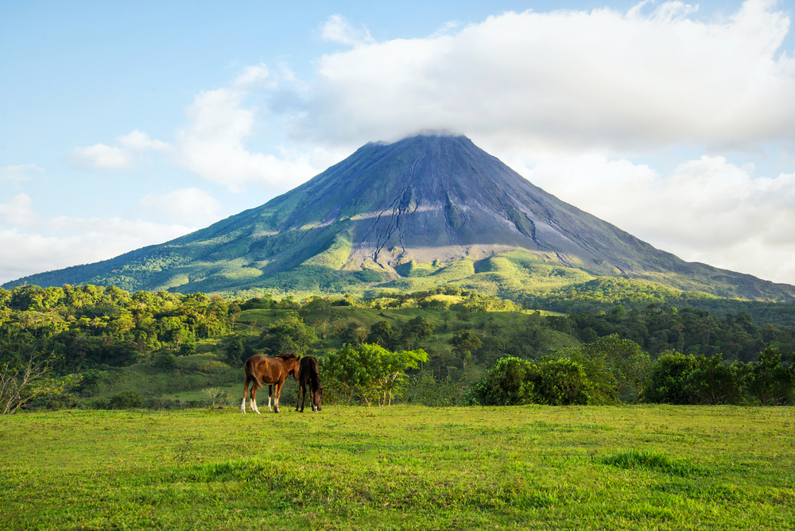

Arenal
Província de Alajuela - Costa Rica
O vulcão Arenal está situado na Costa Rica, na província de Alajuela, com uma altitude de 1670 metros. Era considerado extinto até que em 29 de julho de 1968, entrou em erupção depois de 400 anos de inatividade. Desde sua última erupção, o vulcão emite de forma constante gases e vapores de água, com algumas explosões com emissão de materiais piroclásticos (fragmentos de rocha sólida que são expelidos para o ar pela erupção de um vulcão). A erupção do vulcão Arenal foi em 1993. A última erupção foi em 2010.
